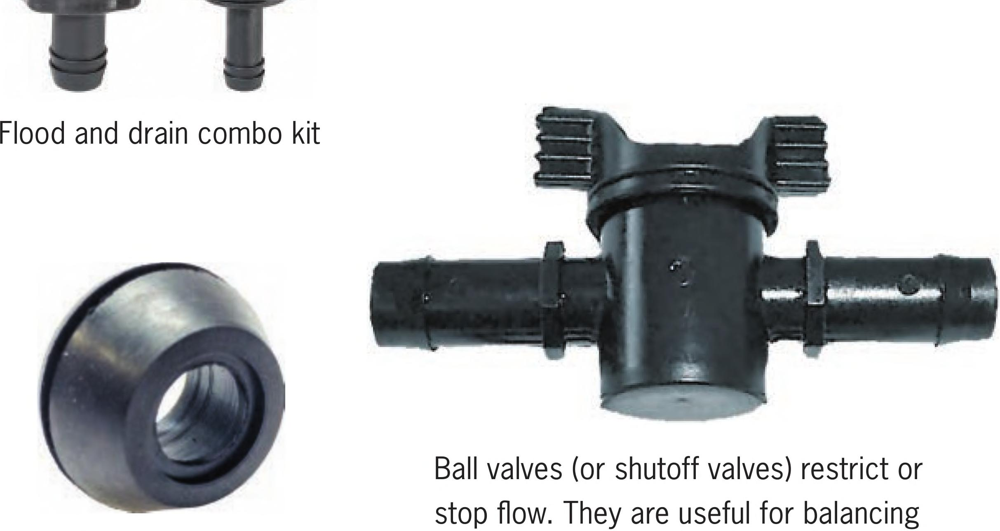

A V2 elbow connector A V2" tee connector A V2" stopper A V2" rubber grommet flow in NFT and vertical hydroponic gardens that may have multiple irrigation zones with various flow rates. An irrigation line hole punch is used to create small holes in V2" or 3/4M vinyl tubing for the insertion of lA" barbed connectors. Fittings Flood and drain fittings allow DIY gardeners to create their own flood trays from household materials like plastic storage totes. Generally, these fittings come in a set that includes a Vi-inch fill fitting, a 3A-inch drain fitting, extensions, and two screen fittings. Grommets are one of the most useful irrigation fittings in DIY hydroponics. Grommets create a watertight seal around irrigation fittings. They can transform PVC pipes, plastic totes, buckets, and more into hydroponic growing areas or reservoirs. Commonly available in V2 or 3A inch. Tubing connectors function and look very much like the plumbing connectors that anyone with experience doing home plumbing is accustomed to using (except, of course, that they are much smaller). POTS AND TRAYS Net pots can be square or circular and generally range from 2 to 10 inches wide. This book focuses on uses for 2- and 3-inch net pots, the most commonly used net pot sizes in DIY hydroponic systems. 22 DIY HYDROPONIC GARDENS
